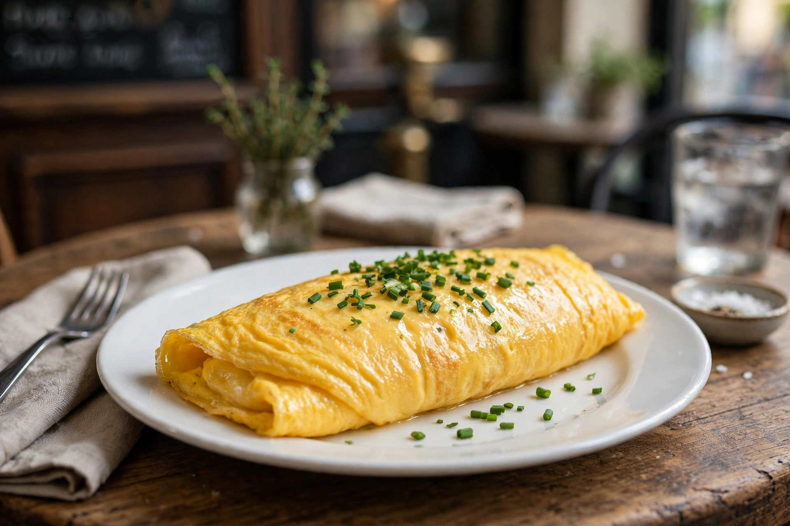

Omelette
From Wikipedia, the free encyclopedia

An omelette (also spelled omelet) is a dish of beaten eggs, seasoned and fried in butter or oil in a pan until set but tender, then folded over — plain, or around fillings such as cheese, ham, mushrooms or herbs. The French omelette, pale and smooth outside with a soft, barely-set centre (baveuse), is the classical benchmark of egg cookery, famously used by chefs to test a new cook's skill. Around it orbits a world of egg siblings: Italy's open-faced frittata, Spain's potato-thick tortilla, Japan's rolled tamagoyaki, Persia's herb-packed kuku. Few dishes are at once so simple, so fast and so contested.
Names and legends
The French omelette is usually traced to alemette, from lamelle — a thin plate — though folk etymologies abound. France keeps the best legend: Napoleon, passing through Bessières in the south, was served an omelette so good that he ordered every egg in the village gathered for a giant omelette for his army; the town still cooks an enormous Easter omelette each year in his honour, cut, so the story goes, with Napoleon's own encouragement. Julia Child's televised omelette lesson — shake the pan, roll it out, dinner in twenty seconds — taught postwar America that French technique was mostly confidence and butter.
Technique
Everything is preparation: eggs beaten just until uniform, a hot pan, butter foaming but not browned, then constant small movements — stirring with a fork or shaking — so the curds stay tiny and creamy. The fold is a roll for the French (cigar-shaped, seam down), a half-moon for diners, a complete inversion for tortillas. Fillings go in warm, cheese melts on contact, and the whole affair takes under two minutes — omelettes punish hesitation and reward mise en place like nothing else in the repertoire.